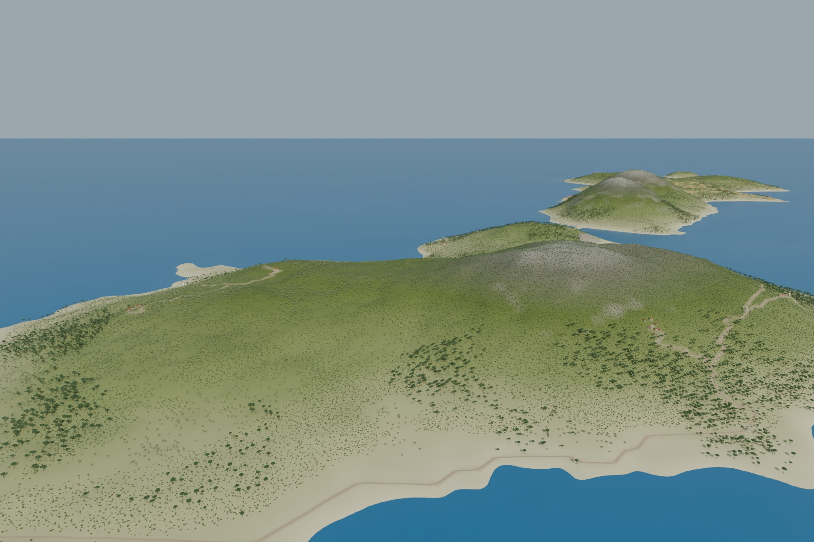
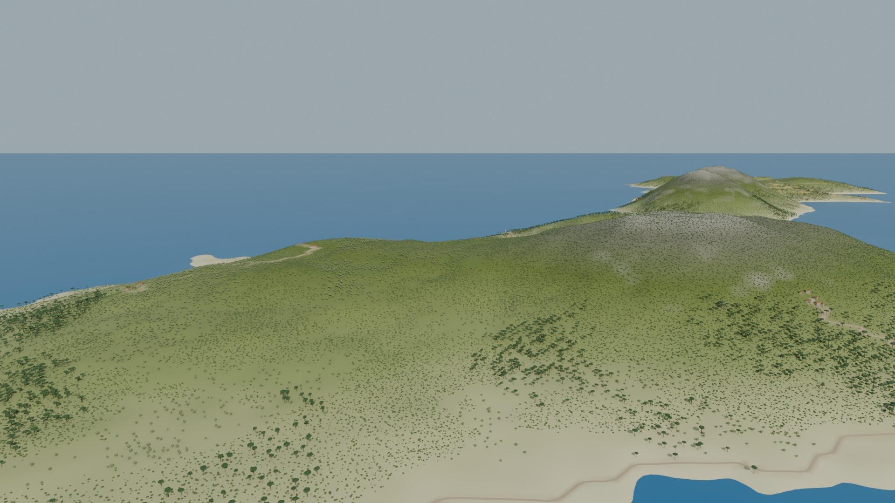
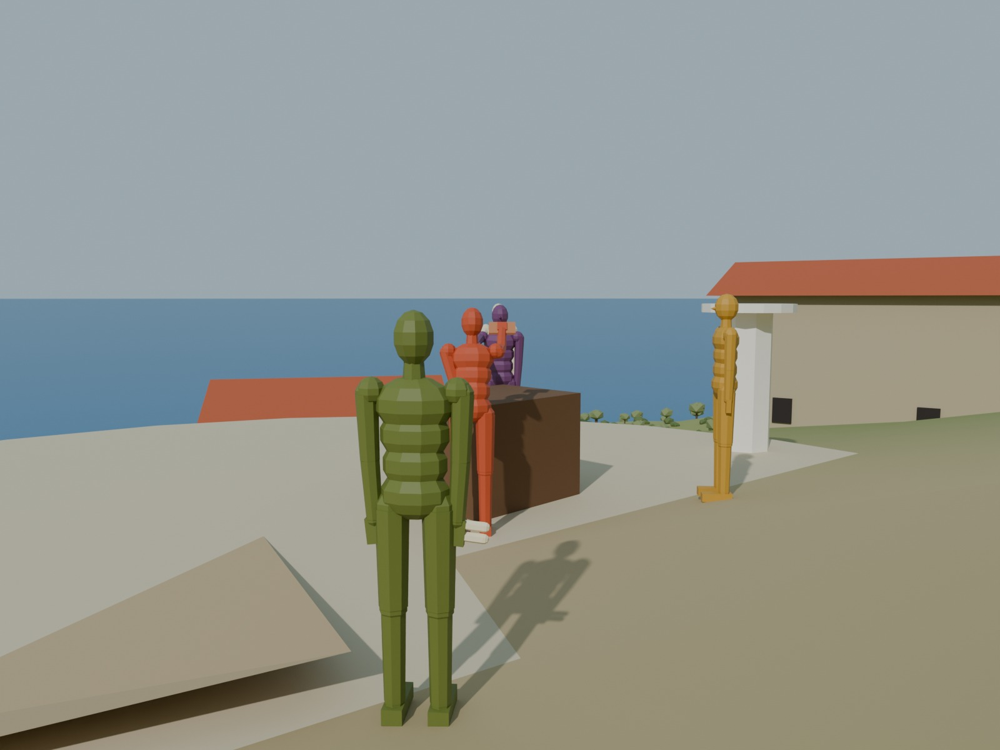
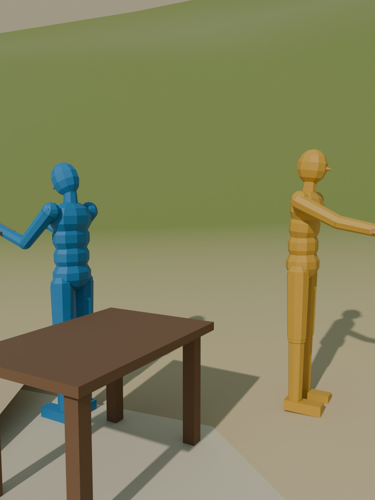
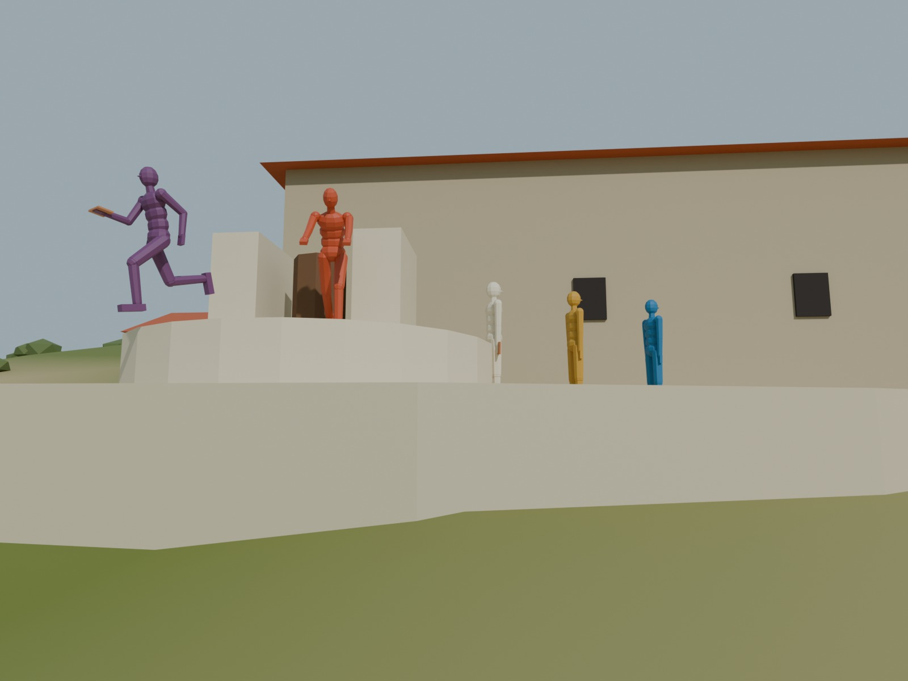
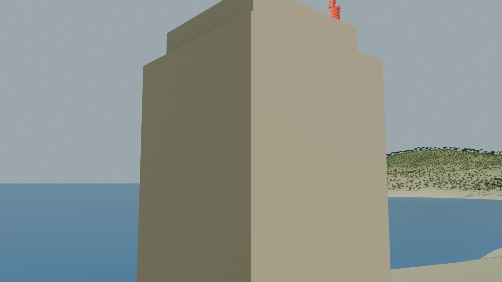
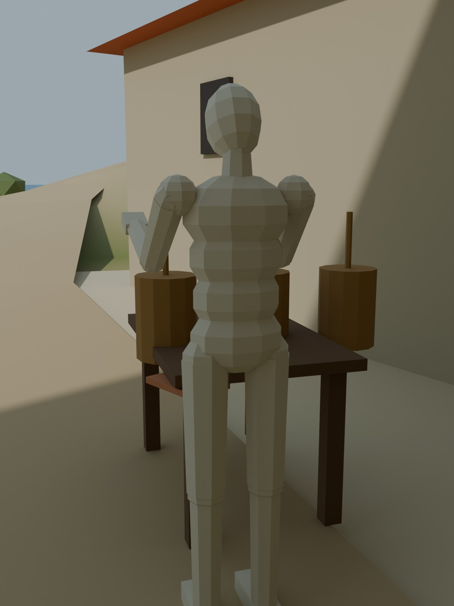
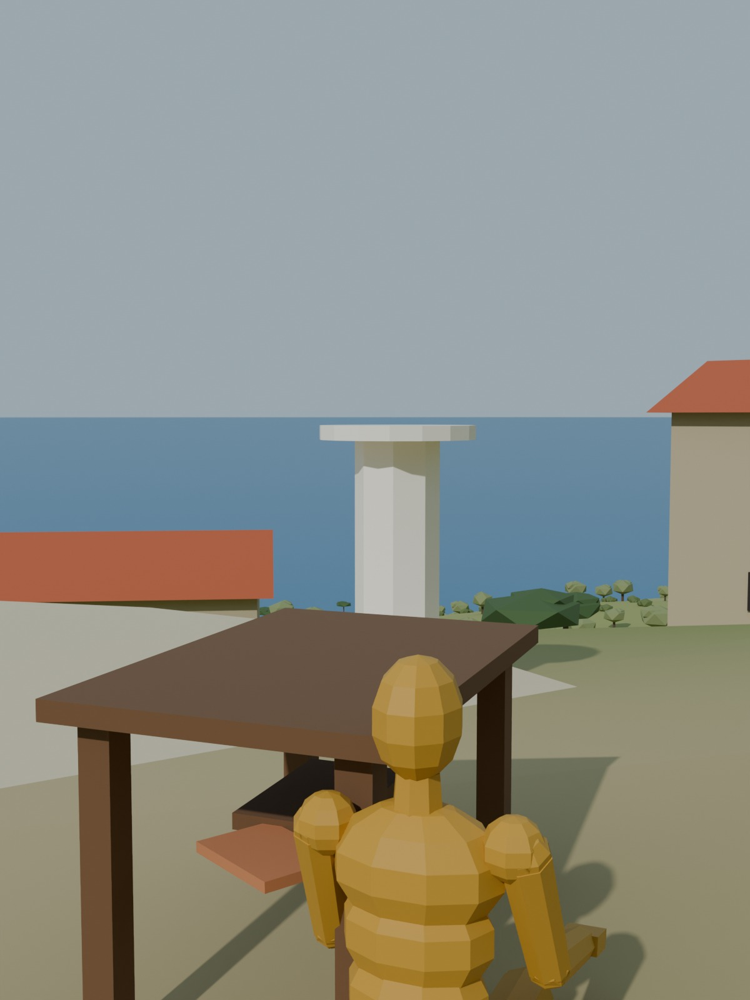
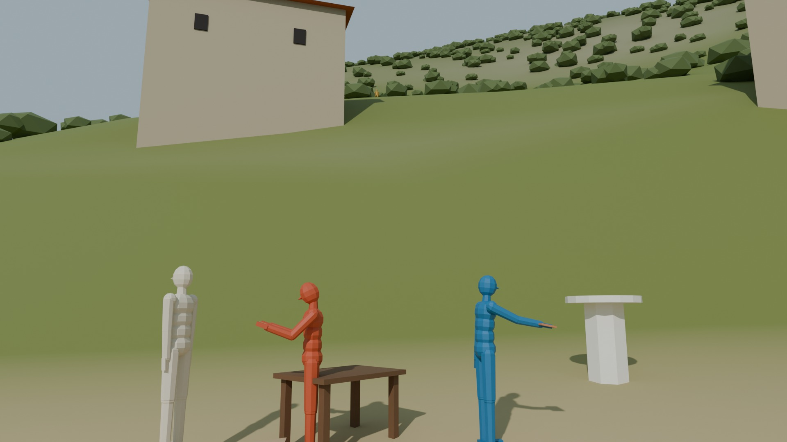

An illustrated chronicle of Paxos's first traders — hidden from one another in their separate coves — and the beads, beacons and water-clocks that let them agree on an order of deeds without ever agreeing on the time.
After Leslie Lamport, "Time, Clocks, and the Ordering of Events in a Distributed System," Communications of the ACM 21, 7 (July 1978), 558–565; with the marginal glosses of C. J. Fidge and F. Mattern (1988). The complete paper, retold.
The scroll translated here was recovered from a hillside cache above the old olive press, in a jar that also held three bronze sundials, none of which agree. It predates the Paxon Parliament by several centuries; indeed, the Paxon mathematicians of Volume IV cite it, though they seem to have read only the first half.
The author is a wandering scholar the coves called Λέσλι. He was summoned to settle a dispute between rival traders and left behind, instead, a treatise on what it means for one deed to happen before another. Readers who want only the algorithm may skip to Chapter III. Readers who want to know why it is not an algorithm for telling which deed truly occurred first in physical time should begin at Chapter I and read slowly.
The second half of the scroll, on the regulation of water-clocks, has been neglected by later copyists. I have restored it. A set of marginal notes added some ten generations later by two unrelated scribes appears in Chapter VII.
— The Translator

Paxos's first traders were three distinct merchants — Trader A of Andros, Trader K of Kea, and Trader M of Milos — each situated in his own cove and screened from the others by a fold of rocky hillside. They communicated only by sending messages by runner over the hill tracks or by skiff across the water. The scholar observed at the outset that a single trading house can be regarded in the same way — the counting room, the warehouse and the loading dock are separate places between which clerks run — but it was the separated traders that concerned him. Paxos, he wrote, is distributed wherever the time a runner takes between two traders is not negligible compared with the time between the deeds of a single trader. A trader who signs twenty contracts while a single order crosses the ridge is a distributed trader whether he likes it or not.
The concept of time is fundamental to our way of thinking, and it is derived from a more basic concept: the order in which transactions happen. We say an order was signed at the third hour if the signing happened after the sundial showed the third hour and before it showed the fourth. The traders had built their commerce on an order-slate system, timestamping every dispatch with the current sundial reading to ensure a fair, first-come-first-served market. An incoming shipment, for instance, was to be awarded to whichever merchant ordered it first. The scholar's first lesson was that this rule, which sounds perfectly definite, collapses when orders are dispatched by different traders on overcast days.

The occasion of the treatise was a feud over a single prized consignment. Aristides (Trader A) claimed he had dispatched his purchase order for a solitary shipment of Phoenician timber before Leonidas (Trader M) had dispatched his. With only one piece in stock in the harbor warehouse, precedence meant the difference between a fortunes-making contract and bitter disappointment. Each trader produced a clay slate stamped with a sundial reading. The readings disagreed with each other, and the sundials disagreed with the sun, because the coastal fog and mountain shadows of the overcast morning made every sundial a matter of opinion.
Λέσλι listened to both traders and delivered a verdict neither expected:
He did not claim that the two orders were written at the identical physical second. He claimed something more unsettling: that if a specification — a contract, a trade law, a merchant agreement — is to be judged correct, it must be stated strictly in terms of things observable by the traders themselves. A rule stated in terms of the sun's true position requires true sundials, and even the best bronze sundial is not perfectly accurate. He therefore set out to define "happened before" without using sundials at all.
If our sundials are blinded by clouds and the universe itself has not decided who came first, how can local merchants, knowing only their own deeds, define what it means for one event to happen before another?
The scholar began by describing the traders more precisely. Each trader is an independent process of commerce. Each trader's life is a sequence of deeds. What counts as a single deed depends on the purpose: an internal calculation of grain tallies, the signing of a consignment contract, the dispatch of an order, or the arrival of a runner from another cove. For any single trader, his own deeds are totally ordered: deed a preceded deed b if he performed a before b, and he can never be in doubt which came first. That, Λέσλι remarks, is simply what is meant by a trader.
Dispatching an order by runner is a deed of the sender. Receiving that runner is a deed of the receiver. With these two facts he defined the relation he wrote with an arrow, "→", and read aloud as happened before.
The relation → on the deeds of the traders is the smallest relation satisfying the following three conditions:
Two distinct deeds a and b are said to be concurrent if neither a → b nor b → a.
He further assumed that no deed happens before itself — "a market in which an order can precede its own conception does not seem to be physically meaningful" — which makes → an irreflexive partial ordering. It is partial because concurrent deeds exist. The order of Aristides and the order of Leonidas were concurrent. That was the whole of his verdict.
He found it helpful to draw the relation on what the merchants called a crossing chart, reproduced below. Each trader is a vertical line, with later times higher on the page. Each deed is a dot on that trader's line. Each dispatch is a line slanting upward from the dot of its sending to the dot of its receipt. Then a → b means precisely that one can travel from a to b on the chart by moving only upward along a trader's line and along dispatch lines.
Another way of reading the definition, the scholar wrote, is that a → b means it was possible for a to causally affect b. Two deeds are concurrent if neither could have affected the other. On the chart, a2 and k3 are concurrent even though the chart has been drawn to suggest that a2 happened earlier by the sun. Trader A cannot know what was done by Trader K at k3 until the runner arrives at a3; before that, he could at most know what Trader K had been planning to do.
The scholar noted that this definition would seem natural to the astronomers of Alexandria who had described the ordering of events in terms of the light signals that could be sent between them.1 He took a more pragmatic path, considering only the dispatches that actually were sent. One ought to be able to judge whether the traders behaved correctly by knowing only the deeds that did occur, without knowing which deeds could have occurred.
If "happened-before" is only a partial order with vast stretches of concurrency, how can men who trade across the hills count their deeds with simple tokens, so that every cause faithfully precedes its effect without ever consulting the sky?
Having set the sundials aside, Λέσλι introduced clocks of a humbler kind. A clock, for his purposes, is only a way of assigning a number to each deed, the number being thought of as the logical time at which the deed occurred. Each trader Pi keeps a clock Ci that assigns a number Ci(a) to each of his own deeds a. Nothing whatever is assumed about the relation of these numbers to the sun. They may be kept on a wooden board strung with wooden beads — an abacus with no timing mechanism at all.
What does it mean for such a system of clocks to be correct? It cannot mean that they agree with the sun, since that would require true sundials. It must be based purely on the order in which deeds occur, and the strongest reasonable requirement is this:
The converse cannot be required as well. If it were, any two concurrent deeds would have to carry the exact same number. On the crossing chart of Chapter II, a1 and a2 are both concurrent with m3, so both would need the same number as m3 — and hence as each other — which contradicts the Clock Condition, because a1 → a2.
The Clock Condition follows from two simpler conditions:
On the crossing chart one may picture each trader's abacus "ticking" through every number, the ticks falling between his deeds, and draw a dashed tick line through all the like-numbered ticks of the different traders. C1 says there must be a tick line between any two deeds on a trader's line. C2 says every dispatch line must cross a tick line. The tick lines can be taken as the time coordinates of the chart and straightened — and the straightened chart is an equally valid picture of the same market. Without sundials, the scholar insisted, there is no way to decide which picture is the better one.
To guarantee C1 and C2, he gave the traders two rules, which the later copyists called the Law of the Monotonic Bead:

IR1 obviously ensures C1 and IR2 ensures C2; together they guarantee a correct system of logical clocks. The numbers beside each dot on the crossing chart were obtained this way, flicking one bead per deed. Notice that a2 bears 2 and k3 bears 3. The lower count of Trader A does not mean Trader A acted first. It means nothing at all. The abacus can prove ancestry; it cannot detect concurrency.
We have beads that advance with every deed, but when two concurrent orders carry the exact same bead count — or when their counts differ without prior communication — which trader's claim takes precedence? How do we build an agreed total order from a partial sky, and can an agreed fiction serve justice?
Click on any deed (dot) above to illuminate its causal ancestors, descendants, and concurrent transactions. You can also add deeds or dispatch runners along the hill tracks.
For the feuding traders, Λέσλι prescribed a second, cruder remedy. Order all deeds by their bead counts, and where two deeds bear the same count, break the tie by some arbitrary but fixed ranking ≺ of the traders — alphabetical by their initial letter, Trader A before Trader K before Trader M, which suited Trader A admirably and displeased only Trader M. He wrote the resulting relation with a double arrow, ⇒:
If a is a deed of Trader Pi and b a deed of Trader Pj, then a ⇒ b if and only if either
This is a total ordering, and by the Clock Condition, a → b implies a ⇒ b: it completes the partial order "happened before" into a total one. But it is not unique. Different clocks satisfying the Clock Condition give different orderings ⇒, and any total ordering that extends → can be produced by some system of clocks. Only the partial ordering → is uniquely determined by what actually happened. The total order is arbitrary — but it is identically arbitrary for every trader, and an agreed fiction serves a market better than an irrecoverable truth.3

The traders used the beads of Λέσλι to sequence their private contracts and commercial dispatches. But the true test of the agreed fiction came when news of the method climbed out of the coastal coves and reached the common folk of Paxos — the olive growers, pressers, and villagers scattered across the island's rocky ridges.
Every autumn, the hillside groves ripened together. Olives, once picked, begin to spoil in the heat within days, turning sweet virgin oil to rancid grease. Yet Paxos had only a single communal olive press, perched high upon the central ridge between the coves. Only one grower could press fruit at a time. For generations, the harvest had been marred by shouting matches, bribes, and fistfights in the press yard as rival farmers raced up the hills. Seeing how the merchants had ended their quarrels through stamped slates and monotonic beads, the common folk adopted the timestamp-based booking system to govern access to the shared press.
Λέσλι formulated the problem as three conditions that any fair booking system must satisfy:
The press was initially granted to exactly one grower. Observe, the scholar wrote, how the conditions involve the ordering of deeds — and that condition II says nothing about which of two concurrently made requests should be granted first.
The obvious solution — appoint a keeper at the press itself to grant requests in the order his runners arrive — does not work. Suppose Grower A sends a request to the keeper and then sends a runner to Grower K. Upon receiving that runner, Grower K sends his own request to the keeper. The Grower K request can easily reach the press first, since runners do not all travel at the same speed along the rocky tracks. Granting it first violates condition II, for the Grower A request happened before the Grower K request.
Instead, the common folk adopted the Law of the Monotonic Bead and used ⇒ to order all requests and releases. To avoid distracting detail, Λέσλι assumed that runners between any two coves arrive in the order sent, that every runner eventually arrives, and that any grower can send directly to any other. Each participant keeps a private request tablet, which no one else ever sees. Initially every tablet holds the starting entry "T0:P0 requests the press", where P0 is the grower first granted it and T0 is less than any bead count. Then there are five rules, each carried out as a single deed:
Both parts of rule 5 are tested by Pi alone, in his own olive grove, looking at his own tablet. The proof is short. Part (ii), with runners arriving in order, ensures that Pi has learned of every request that preceded his; since only rules 3 and 4 erase entries, condition I follows. Condition II follows because ⇒ extends →. Rule 2 guarantees that part (ii) of rule 5 eventually holds, and rules 3 and 4 guarantee that part (i) eventually holds if every holder eventually releases — which is condition III.
There is no keeper and no central queue. And the method generalizes. Any form of coordination among the islanders can be described as a state machine: a set of possible commands, a set of possible states, and a function telling how each command changes the state. For the press, the commands are the requests and releases, and the state is a queue of waiting requests, with the request at the head being the one granted. If every participant simulates the machine, executing all commands in the order ⇒, then every participant executes the same sequence of commands and arrives at the same state. A participant may execute a command stamped T once he has learned of all commands from all others stamped T or less.
The method requires the active participation of every participant. Each must learn every command issued by the others, so the failure of a single participant halts all work at the press.
Λέσλι declined to treat failure in this scroll. He made one observation, which the later volumes of this series spend a great deal of parchment rediscovering: the entire concept of failure is only meaningful in the context of physical time. Without a sundial, there is no way to distinguish a grower who has fallen from a cliff from one who is merely resting between deeds. A participant can tell that a counterpart has "crashed" only because he has been waiting too long for a reply.4
The press rules governed all requests carried by honest runners trudging along the hill tracks. But what if cunning folk on the high cliffs devised a way to jump the queue ahead of messengers who were already in flight across the island? Can our beads preserve justice when fire outruns feet, and news travels faster than our system?

The press was granted in the order ⇒, and for a season peace returned to the olive groves. But wherever there is an agreed queue, there are minds scheming to subvert it. Certain cunning folk across the bays soon discovered a way to jump the queue ahead of messengers who were already in flight along the arduous hill tracks, long before those runners could reach the other coves or the olive press.
Suppose an honest grower in a distant cove dispatches a runner with booking request A over the mountain pass. While that runner is still in flight along the rocky track, a watcher on the heights touches a torch to a beacon frame. Across the bay, where light crosses the water in an instant, an accomplice on the far headland sees the blaze flare against the night sky and immediately dispatches booking request B. Because no runner had yet arrived from the first cove to advance his beads, the accomplice's abacus still showed an earlier, lower count. When both requests eventually reached every grower's tablet, B bore a lower timestamp than A, and the cunning accomplice was granted the press first — jumping clean ahead of the runner who was already on the road!
This behaviour the scholar called anomalous. The beads could not know that A had preceded B, because the precedence had been signaled by fire across the sea, and fire was not part of the runner system.5
Let S be the set of all deeds of the islanders (dispatches, receipts, and pressings), and let S be the larger set that also contains every deed outside the runner network — beacon fires, flags waved from cliff-tops, shouts across the water. Let ⟶ be the true happened-before relation on the larger set. In the cunning folk's scheme, A ⟶ B in the real world of men, but not A → B in the logical world of beads. No method based entirely on the internal deeds of S, and blind to the outer deeds of S, can guarantee that A is ordered before B.
There were two ways out. The first was to force the outside signal into the bookkeeping: the watcher on the near headland would have to signal the bead count of request A alongside his beacon, and his accomplice would be bound to set his abacus higher. But this relied on the good faith of the very queue-jumpers trying to cheat the system. The second way, the scholar saw, was to bind the island to physical time, and build clocks that satisfy a stronger condition:
Beads do not in general satisfy this. But, the scholar wrote, it is one of the mysteries of the universe that it is possible to construct physical clocks which, running quite independently of one another, will satisfy the Strong Clock Condition. So after half a scroll spent setting sundials aside, he returned to them.
If out-of-band signals can outrun our logical beads, how closely must physical clocks be synchronized to ensure that cause always precedes effect in the eyes of all observers — and what is the exact toll that geography exacts upon time?

The bronze sundials were replaced, in the reform, by water-clocks, which run continuously rather than in beads. Let Ci(t) be the reading of trader i's clock at true time t, running smoothly except for isolated jumps where it is reset. For it to be a true clock, it must run at approximately the correct rate, and all the clocks must approximately agree:
PC1. There exists a constant κ ≪ 1 such that for all traders i:
PC2. For all traders i, j:
For the finest water-clocks of the reform, the scroll gives κ ≤ 10−6.6 How small must κ and ε be to prevent anomalous behaviour? Let μ be a number such that if deed a happens at true time t and deed b of another trader satisfies a ⟶ b, then b happens later than t + μ. In other words, μ is less than the shortest crossing time — the shortest distance between traders divided by the speed of the fastest possible signal, which, for beacon fires, is very small indeed. To prevent anomalies we need Ci(t + μ) − Cj(t) > 0. Assuming clocks are only ever set forward, PC1 and PC2 give this whenever
Now suppose runner m is dispatched at true time t and received at t′. His total delay νm = t′ − t is unknown to the receiver, but he knows some minimum delay μm ≥ 0 — no runner from Trader A ever reached Trader K in less than an hour. The difference ξm = νm − μm is the unpredictable delay. The Law of the Monotonic Bead becomes:
A trader needs to know only his own clock reading and the stamps on the slates he receives. Suppose the traders are joined by a web of tracks, and say a runner is sent over a route "every τ hours" if for any t at least one runner leaves between t and t + τ. The diameter of the web is the smallest d such that any trader can be reached from any other in at most d crossings. Then:
Assume a strongly connected web of traders with diameter d that always obeys IR1′ and IR2′. Assume that for every runner μm ≤ μ for some constant μ, and that for all t ≥ t0: (a) PC1 holds; (b) there are constants τ and ξ such that every τ hours a runner with unpredictable delay less than ξ is sent over every route. Then PC2 is satisfied with
for all t ≳ t0 + τd, where the approximations assume μ + ξ ≪ τ.
The scroll notes that the requirement that clocks are never set back distinguishes this problem from those studied by earlier press-keepers, and claims the theorem as new. It also observes, almost in passing, a quick way of initializing the clocks or resynchronizing them if they should drift apart for any reason: any trader sends a slate that is relayed to every other, and synchronization is achieved in less than 2d(τ + ν) hours.
Λέσλι, then, never claimed physical time was an illusion. He claimed it was expensive — and showed exactly what it costs.
The concept of "happening before" defines an invariant partial ordering of the deeds of the traders. It can be extended to a somewhat arbitrary total ordering, which is enough to share an olive press without a keeper. The arbitrariness can produce anomalous behaviour when it disagrees with what the traders perceive, and that can be prevented by properly regulated water-clocks, whose possible agreement the theorem bounds. But above all, he wrote, it is important to realize that the order in which things happen among the traders is only a partial ordering — an idea useful for understanding the basic problems of coordination independently of whatever mechanism is used to solve them.
Our water-clocks are synchronized and anomalous beacons can no longer cheat the market. But what if Merchant A bids at hour 3, and Merchant M bids at hour 4? Did M see A's courier pass the crossroad and front-run the trade, or did M act in complete isolation? Can a single number prove whether two bids were causally entangled or truly independent?
Some ten generations after the scroll was written, two scribes who never met — one from an island at the southern edge of the known world, the other from a mainland forest to the north — independently wrote the same correction in its margins. I translate the southern scribe, Φιτζ, and the northern scribe, Μάττερν, together, noting where they differ.

Both scribes begin from the same complaint. The scholar's beads map a partially ordered set of deeds onto a single row of numbers, and in doing so they lose information: deeds that could have happened in either order receive different counts, as though they happened in a definite order. For sharing an olive press this does not matter. For the market judges who must ask "did this trader front-run that one?", it matters a great deal.
Their remedy is to carry not one count but a row of counts, one for every trader — a vector of beads. Each trader's abacus holds his best knowledge of how far every other trader has counted:
Because of the transitivity of the scheme, a trader learns of the counts of traders he has never directly dealt with. Rows are compared as follows: u ≤ v if every row of u is at most the same row of v; u < v if also u ≠ v; and u ∥ v if neither u < v nor v < u. The northern scribe's central theorem is that this comparison is exact:
Moreover, if e is a deed of trader i, the test needs only one row: for e′ ≠ e, e → e′ iff C(e)[i] ≤ C(e′)[i].
| Transaction | One bead (Chapter III) | Many rows [Trader A, Trader K, Trader M] |
|---|---|---|
| a1 | 1 | [1, 0, 0] |
| a2 | 2 | [2, 0, 0] |
| k3 | 3 | [1, 3, 0] |
| a3 | 4 | [3, 3, 0] |
| m3 | 4 | [0, 1, 3] |
| k4 | 4 | [1, 4, 2] |
The southern scribe adds two refinements. For runners who may overtake one another on the track, the receiver must take care in updating the sender's own row, lest a late slate falsely suggest ancestry. And for traders who meet face to face — a handshake at the quay rather than a slate carried by a runner — both traders exchange abaci and both take the larger rows, since a meeting is a single shared deed. Both scribes admit the cost. The abacus grows with the market: one row for every trader, whether or not you ever trade directly with him.
With our multi-wired abacus, no front-runner can conceal their guilt. But what if the Port Magistrates demand an island-wide financial audit at year's end? How can we tally every coin in every vault and every consignment aboard skiffs in transit, without bringing all commerce on Paxos to a dead halt?

The northern scribe pressed further. In an ordinary marketplace all in one town square, a consistent audit is easy: everyone agrees upon a moment far enough in the future and opens their strongboxes at that moment. Among traders scattered in distant coves there is no such moment. What can be had is a cut — a zigzag line across the crossing chart, separating each trader's past from his future. A cut is consistent if every runner received on the past side was also dispatched on the past side (though not necessarily vice versa). An inconsistent cut counts coins as received that were never sent.
His "rubber band test" is memorable: imagine the cut line is elastic, and stretch it until it stands straight up. If any runner's dispatch line then crosses it from future to past, the cut is inconsistent. Otherwise, there is an equally valid chart on which all the cut's deeds happened at the same instant — an audit that could have been taken at a single moment, which is as good as any audit can be. The consistent cuts form a lattice under union and intersection, and that lattice, he proved, is isomorphic to the lattice of possible rows of beads.
From this he derived an audit that works even when runners overtake one another. Every trader and every slate is either white (before the audit) or red (after). The initiator turns red and ensures, by relaying red slates, that eventually every trader does. A trader counts his vault and turns red the first time he receives a red slate — before reading it — so no red slate is ever received by a white trader, and the white deeds form a consistent cut. A white slate arriving at a red trader was in transit across the cut; the receiver logs it as wealth in transit and sends a copy to the initiator. To know when the last such copy has arrived, each trader keeps a tally of slates sent minus slates received, counted along with his vault. When the tallies are in, the initiator knows exactly how many copies to wait for.7
Our books balance to the last obol, and our cut is consistent across the sea. But look upon the mountain path: Aristides (Trader A) has collapsed beneath the mid-day sun and answers no runners. Under Rule 5 of our press, must all work on Paxos freeze because one trader sleeps?
Stripped of its olive press and clay slates, the scroll is Leslie Lamport's seminal 1978 paper, and its key terms translate directly:
| In the market | In the paper |
|---|---|
| Trader Pi | Process Pi |
| Deed (contract, dispatch, receipt) | Event |
| Runner carrying a stamped slate | Message carrying timestamp Tm |
| Crossing chart | Space-time diagram |
| Happened-before, → | Causal partial order ("happened before") |
| Law of the Monotonic Bead | Logical (Lamport) clocks, rules IR1 and IR2 |
| Alphabetical rank of traders | Arbitrary total order ≺ on processes used to break ties |
| Shared communal olive press | Distributed mutual exclusion over a single shared resource |
| Every participant simulating the press queue | The state machine approach (replicated state machine) |
| Beacon fire across the bay | Causal channel external to the system (the paper's telephone call) |
| Water-clocks, κ, ε, μ, ξ | Physical clock synchronization with bounded drift and unpredictable delay |
| Many-rowed abacus | Vector clocks (Fidge 1988; Mattern 1988) |
| White and red seals | Distributed snapshots & consistent cuts (Chandy-Lamport 1985; Mattern 1988) |
Three observations from the paper echo through every later volume of this series. First, the replicated state machine — every trader executing the same sequence of commands in the same order — is exactly the object that Paxos, Viewstamped Replication, PBFT and Raft exist to maintain in the face of failures. Second, Lamport's algorithm has no fault tolerance at all: one crashed trader halts every trader. Third, the remark that failure is only meaningful in the context of physical time is the seed of the FLP impossibility result (Volume II) and of the timing assumptions of partial synchrony (Volume III) that every practical consensus protocol relies on.
The original papers this volume retells: